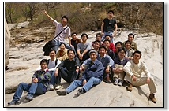
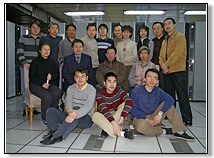
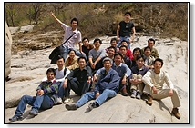
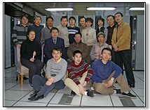

|
[2008-05-17] 系统软件组春游妙峰山 [2007-10-23] 中科院常务副院长白春礼院士视察计算所 [2007-10-20] 操作系统组秋游凤凰岭 [2007-10-15] 科技部部长万钢莅临计算所参观指导工作 [2007-09-27] 智能中心举行2007年度全体会议 [2007-09-07] 曙光5000唱响未来歌王争霸赛 [2007-07-06] 2007届研究生毕业典礼 [2007-04-23] “新一代机群关键技术研究”项目圆满通过验收 [2007-04-21] 操作系统组春游神堂峪 [2007-02-27] 曙光4000荣获2006年度国家科技进步二等奖 [2007-02-03] 智能中心新春联欢会 [2007-02-02] 计算所新春联欢会 [2007-02-02] 我组李剑宇同学荣获2006年度计算所所长奖学金优秀奖 [2006-12-22] 快乐生活 快乐2006 [2006-11-18] 操作系统小组八香之行 [2006-11-10] 通信与可靠性小组钱柜放歌 [2006-11-04] 文件系统小组秋游石景山游乐园 [2006-10-25] 热烈庆祝计算所成立50周年 [2006-09-28] 智能中心举行中秋联欢会 [2006-04-25] 操作系统组趣味运动会“丢沙包”项目荣获季军 [2006-04-22] 操作系统组春游十渡 [2006-03-02] 曙光4000系列高性能计算机研究集体荣获2005年度“中国科学院杰出科技成就奖” [2006-01-16] 智能中心举行新春联欢会 [2006-01-13] 我组唐荣锋同学荣获2005年度计算所所长奖学金特别奖 [2005-12-27] 《大规模机群管理系统》项目获2005年“浪潮高性能计算创新奖” [2005-10-22] 操作系统组秋游青龙峡 [2005-07-26] 智能中心南戴河度假 [2005-07-03] 05届研究生毕业典礼 [2005-04-22] 曙光4000A在上海通过863专家验收 [2005-04-16] 操作系统组春游百望山 [2005-01-21] 智能中心举行新春联欢会 [2005-01-14] 软件专项通过863专家组预验收 [2005-01-12] 曙光4000A项目组被评为2004年度计算所优秀团队 [2005-01-12] 我组霍志刚同学荣获2004年度计算所所长奖学金特别奖 [2005-01-12] 我组熊劲副研究员被评为2004年度计算所优秀员工 [2004-11-27] 计算所在京举办开放日 27日至29日，计算所在中国科技馆展示一系列的科研成果，同时还组织了20多场“院士论坛”、“专题讲座”、“科普讲座”，并向公众免费发放“计算机漫谈”等科普资料。公众可以与科研人员进行一次零距离的对话。 这次开放日活动，是国立科研机构首次策划、整体用展览的形式走进公众科普基地，是科普工作的一个新尝试。 我国自主研发的高性能计算机曙光一号、中国芯“龙芯”和“凤芯一号”，一起被中科院计算所赠送给了中国科技馆。它们将在中国科技馆信息科学技术展区的突出位置亮相。 图为操作系统组唐荣锋博士正在为参观者进行讲解。 [2004-11-24] 初步形成英文版网页 [2004-11-15] 曙光4000A在沪正式启动 经过智能中心、曙光公司和上海超算的共同努力，曙光4000A终于在上海正式启动，对外提供服务。智能中心曙光4000A项目组系统软件研发人员和系统管理人员三次往返上海，历时两个多月，圆满完成任务。曙光4000A的正式开通使用，标志着智能中心成员共同的努力终于真正得到应用，曙光4000A超级服务器也从研发阶段进入了实用阶段。图为智能中心主任孙凝晖研究员与曙光公司总裁历军先生在曙光4000A前的合影。 [2004-11-12] 主页正式对外开放 [2004-11-08] 更新小组活动页面及部分小组成员主页 [2004-10-28] 曙光4000A在上海超算试运行 曙光4000A于2004年6月底鉴定通过，8月从北京运往上海。智能中心的研发人员于8月底前往上海进行系统调试与人员培训。为了尽快调试通过，操作系统组的霍志刚博士和高性能计算组的冯高锋加班加点进行测算，经常工作到凌晨，终于使得曙光4000A以最快的速度在上海重新安装调试通过。图为上海超级计算中心。 [2004-10-11] 建立主页框架 |